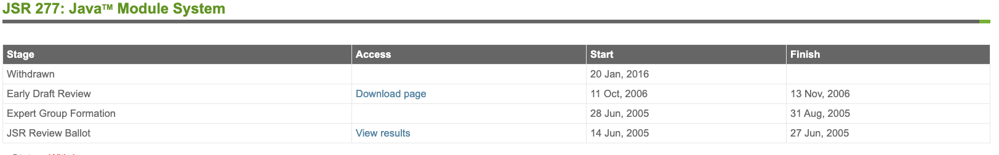
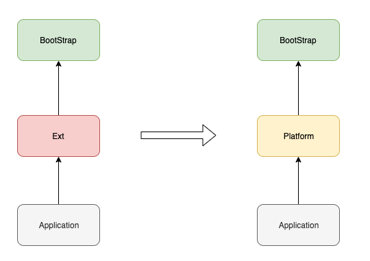

Java 模块化系统 Jigsaw
2019/10/24 21:18 · By vran
历史
2017年9月21日 Java9 正式发布，其中最大的变化就是引入了代号为 Jigsaw 的模块化系统（Java Platform Module System，简称 JPMS）。
Java 的模块化系统可以说是一波三折，在 2005 年（Java7） 就已经有提案了（ JSR277 ），但是因为种种历史原因，在一年多后该提案又被取消掉了

直到 2014年，新的提案 JSR376 被提出，Java 的模块化系统才得以重新步入正轨，虽然它迟到了（原计划于 Java8 发布），但并没有缺席。
下图展示了从 JSR376 被提出到实现的各个阶段：

目标
在 JSR376 中，对模块化系统的目标是有非常明确的描述的：
- 使用更可靠的配置来描述程序组件之间的依赖关系，并以此替代问题频出的 class-path
- 组件可以控制其 API 被其他组件的访问性，提供一个更强的封装能力
- 增加 JavaSE 平台的扩展性，开发人员可以只将他需要的功能模块组装到一个自定义的配置中去
- 增强平台的完整性，确保平台内部 API 不会被访问
- 性能提升
实际上最核心的目标是最前面的两点，替代 class-path 和 增强封装性。
在 Project Jigsaw: Goals & Requirements DRAFT 3 里对于实现目标的描述可能更加通俗易懂一些。
初次接触 Java9 的模块化系统时，会不自觉的和 Maven、Gradle 等构建工具进行对比，但是实际上两者关注的核心点是不一样的。
模块化系统更注重模块之间的封装性，而构建工具更注重的是依赖管理和项目构建。
也就是说构建工具可以决定依赖某个第三方库，而模块系统则决定你能使用该第三方库的哪些包或类，两者并不是对立的。
这也恰好解释了为什么 Java 的模块化系统没有版本管理
语法
Java 的模块是在 package 之上提供的一层抽象，所以通常一个模块是由多个 package 聚合而成的。
那么如何定义一个模块呢？
只需要在项目下创建一个 module-info.java 的文件，该文件所在包及其子包就组成了一个模块。
module-info.java 描述了模块的以下信息：
-
模块名称
-
依赖的其他模块
-
该模块下的封装信息（类的访问，反射权限）
-
该模块下的服务提供者和服务消费者信息（SPI）
下面是摘自 《 Java 语言规范 》 的 模块定义语法：
// 以大括号标注的是占位符
// 以中括号标注的是可选项
// module, requires, exports, opens, provides..with, transitive, static 等都是关键字
{Annotation} [open] module Identifier {. Identifier} {
{ModuleDirective}
}
ModuleDirective:
requires {RequiresModifier} ModuleName ;
exports PackageName [to ModuleName {, ModuleName}] ;
opens PackageName [to ModuleName {, ModuleName}] ;
uses TypeName ;
provides TypeName with TypeName {, TypeName} ;
RequiresModifier:
(one of)
transitive static
下面来简单的过一遍
Module
module 与 class 、interface 等关键词类似，只不过它是专门用来定义模块的
// 定义一个名称为 MyModule 的模块
module MyModule {
}
注意，一个 module-info.java 文件中只能出现一次 module 的定义， 它并不能像 class 或 interface 一样能在单个文件中多次定义。
为了让注解能作用于 module 之上，Java 9 特地为 ElementType 扩展了一个 MODULE 类型
/**
* 一个可以修饰 module 的注解
*/
@Target({ElementType.MODULE})
@Retention(RetentionPolicy.RUNTIME)
@interface ModuleAnnotation {
}
module 前有一个可选关键字 open
open module MyModule {
//......
}
在 《Java 语言规范》 中，将被 open 修饰的模块定义为 开放模块，否则就是 标准模块。
两种模块之间的区别主要在于类的访问性上
- 开放模块：其他组件在编译时只能访问该模块明确 exports 的包下的类，但是在运行时可以访问该模块下所有的类
- 标准模块：其他组件在编译时和运行时只能访问该模块明确 exoprts 的包下的类
exports 关键字会在后面谈到
更多信息可以参考《Java 语言规范》 7.7 Module Declarations
Exports
前面说开放模块和标准模块的区别时提到了 exports 关键字，**exports ** 是 module 结构体内的一个指令，后面会跟上一个包名，表示该包下的所有类可以在编译期和运行时被其他模块访问。
比如下面的代码就是开放 MyExportModule 下 com.sample 包下所有的类的访问权限给第三方模块
module MyExportsModule {
exports com.sample;
}
有时候我们还想更细粒度的 exports，就可以通过 exports...to... 明确指定允许访问的第三方组件， 相当于从群聊变成了私聊。
如下， com.sample 下的类只能被模块 B 访问。
module A {
exports com.sample to B;
}
Opens
opens 与 exports 类似，主要区别在于 opens 是只针对于运行时访问能力的一个指令。
opens 后面仍然是指定包名，该包下的类第三方组件是不可以直接引用的（即无法通过 import 使用），但是却可以通过反射进行调用。
module MyOpensModule {
opens com.sample
}
与 exports 一样， opens 也可以通过 to 关键字指定具体的模块：
module A {
opens com.sample to B;
}
需要注意一点就是，如果你的模块是开放模块，就不需要再使用 opens 了，用了也会产生编译错误的。
Requires
前面说的 exports 和 opens 都是控制模块内部的访问权限的，那么如何依赖第三方模块呢？
这就轮到 requires 上场 了，它的作用类似于 maven 的 标签，不过两者的含义可不同。
maven 和 gradle 这样的构建工具会从网络或本地将依赖导入到工作目录的 class-path 中，而模块化系统并不会从远程下载依赖，它更多是控制你是否有访问其他模块下相关类的能力。
比如我现在通过 maven 导入了 slf4j 的依赖，当我通过 import 引用 slf4j 包下的类时就会报错
IDEA 很友好的提示了需要先 requires 该组件
module Sample {
requires org.slf4j;
}
为了使用方便， 用户定义的模块都会默认 requires java.base，我们自己也可以显示的去覆盖它。
requires 后面还可以跟 transitive 或 static 关键字
- transitive 代表依赖可以被传递（默认依赖是不传递的， 官方也不推荐使用 transitive）
- static 代表依赖的模块在编译期是必须的，在运行时是可选的 （ 比如 lombok ）
下面用一段具体的实例来展示依赖传递
(1)、A 依赖 B
(2)、B 依赖 C，并且依赖关系是 transitive，这样的话 A 就隐式依赖了 C
(3)、C 依赖 lombok，并且依赖关系是 static 的
module A {
requires B;
}
module B {
requires transitive C;
exports B.sample
}
mobule C {
requires static lombok;
opens C.sample
}
如果没有使用 transitive，但是模块 A 又需要 模块 C 的话，就必须要再模块 A 中显示的指定依赖关系，否则的话会有编译错误
module A {
requires B;
required C;
}
Uses & Provides…with
模块化系统对 JAVA 的 SPI 机制也做出了巨大的改变，而 Uses 和 Provides..with 就是针对 SPI 的关键字。
SPI 本质上就是运行时动态的在 class-path 路径下加载对应的实现类的一种技术，它可以解耦服务消费者和服务提供者
我在组件 A 中定义了一个接口 Serializer，并创建了一个工厂 SerializerFactory 通过 SPI 机制加载接口的实现类
public interface Serializer {
byte[] serialize(Object target);
}
public class SerializerFactory {
public static List<Serializer> getSerializers() {
final ServiceLoader<Serializer> loader = ServiceLoader.load(Serializer.class);
return loader.stream()
.map(ServiceLoader.Provider::get)
.collect(Collectors.toList());
}
}
在组件 B 中定义了定义了实现类 JdkSerializer ，并根据 SPI 的规则创建配置文件 com.sample.Serializer 并写入 JdkSerializer 的全限定名
- resources
- META-INF
- services
com.sample.Serializer
这样就完成了 SPI 的整个配置， 但是在模块化系统中接口和实现的配置全部转到了 module-info.java 文件中。
首先在组件 A 中要用 uses 明确指定 Serializer 为服务提供者
module A {
// Serializer 和 SerializerFactory 都在该包下
exports com.sample;
uses com.sample.Serializer;
}
如果不适用 uses 指定的话，SerializerFactory.getSerializers() 就会抛出异常
java.util.ServiceConfigurationError: com.sample.SerializerFactory: module A does not declare `uses`
模块 B 依赖模块 A，并为 Serializer 提供实现类，同样需要通过 provides…with 来指定服务的实现类（不再需要创建 com.sample.Serializer 文件了）
module B {
requires A;
provides Serializer with HessianSerializer, JdkSerializer;
}
provides A with B 可以这样去理解， 为接口 A 提供实现类 B。
类加载器
谈完了语法，再来看看模块化系统为类加载器带来的变化。
双亲委派模型没有变， 但是ExtClassLoader 更名为 PlatformClassLoader，还有 ApplicationClassLoader 除了可以加载 class-path 的类以外，还支持 module-path 的类路径加载。

实例
在只有 class-path 的时代，我们用 javac 命令编译时会通过 classpath 参数指定依赖类路径， 使用 java 命令运行时也会通过 cp 参数指定类路径
javac --classpath
java -cp
下面通过一个简单的示例来展示这两个命令在模块化系统中的应用
在项目 module-sample 下，module-A 和 module-B 分别代表两个模块，mods 是用来存放编译输出的目录。
module-sample/module-A/src
module-sample/module-B/src
module-sample/mods
模块 A 的目录结构如下
module-A/src/com/sample/Test.java
module-A/src/module-info.java
pakcage com.sample;
public class Test {
public void say(String word) {
System.out.println(word);
}
}
module A {
exports com.sample;
}
编译模块 A
javac -d mods/A module-a/src/module-info.java module-a/src/com/sample/Test.java
模块 B 的解构如下
module-B/src/com/test/MyTest.java
module-B/src/module-info.java
package com.test;
public class MyTest {
public static void main(String[] args) {
System.out.println("hello world");
}
}
module B {
requires A;
}
编译模块 B ，由于当前模块依赖了模块 A，所以需要指定 module-path，从而使得编译期可以找到 模块A。
-d参数指定编译文件的输出目录
-p指定 module-path
javac -p mods -d mods/B module-b/src/module-info.java module-b/src/com/b/MyTest.java
运行 main 方法
java --module-path mods -m B/com.b.MyTest
兼容性
虽然 Java9 发布已经有一段时间了，但即使是现在很多第三方库也还没有模块化，为了保证兼容性，当 module-path 下存在没有定义 module-info.java 文件的依赖时，JAVA 会自动将其转为 automatic-module
-
Automatic-module 的的模块名会根据 manifest文件的定义 或 jar名称来决定
-
Automatic-module 默认 exports 组件内所有包
-
Automatic-module 默认 opens 组件内所有包
Automatic-module 只是权宜之计，因为依赖的库迁移到模块化系统后，它的模块名和封装性都可能会改变。
最后
Jigsaw 项目中还有 jlink， jmod，jdeps 等工具，它们都是应用于模块之上的工具。
尤其是 Jlink， 通过该工具你可以对 JDK 进行 “ 裁剪 ”，从而构建出拥有最小依赖集合的运行时环境。
如果你的项目中有 automatic-module 的话，是无法通过 jlink 进行裁剪的
这个裁剪对于 GUI 项目来说有着不小的诱惑，因为以后就不必要求客户端安装 JRE 了，分发出来的包就是可以直接运行的。
我在 PrettyZoo 项目中使用 Jlink 构建了一个最小运行镜像，总共 44M 左右，效果还是非常不错的（通过插件解决了 jlink 不支持 automatic-module 的限制）。
PrettyZoo 是一个 zookeeper 的 GUI，基于 JavaFx11 实现的，欢迎 start 或 issue。
该项目最开始时基于 Java8 开发的，后面才迁移到了 Java11，也算是完整的踩了一遍迁移的各种坑，迁移相关的内容会在后续单独再写一篇文章。